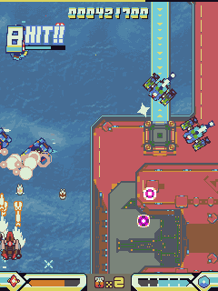
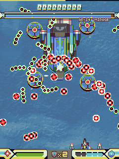
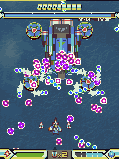

##  v1.1 [21st June 2017]
### Patchnotes
* Replay functionality available. The game will prompt you to save a replay upon finishing a run.
* Leaderboard functionality available through Steam. You can upload your score to the leaderboards alongisde saving a replay.
* Note that using the "Continue" function will disable replays and leaderboard upload for that run.
* Note: Due to technical reasons, replay and leaderboard functionality is Windows-only.
* Break Guide is available! You can now view a short clip of each break bonus being performed.
* Experimental Weapon mode is available! You have no bombs and a weak main gun, but access to 3 new special weapons.
* Each special weapon can be purchased in the Unlocks menu.
* Scrap Option - The shotgun-like explosive options from "Experimental Weapon". Excellent screen coverage.
* Plasma Blade - Val's short-range, fast-firing variant of the Plasma Lancer. Great efficiency.
* Junk Cannon - Fires streams of sticky, damaging junk data. Massive damage.
* Ammo refills slowly on its own - collecting score items will also refill it.
* Game difficulty locked to Hyper mode.
* Score items are harder to collect.
* Shot type rebalancing:
* Increased the unfocused damage for both Wide shot types.
* Increased damage across the board for Variable shot types.
* Improved the handling for Val Variable shot type.
* The unfocused player speed is now slightly modified according to the shot type selected. Power shot is unaffected. (Power > Variable > Wide)
* Val's Hyper Laser is now a powerful single-shot beam with splash damage. Versatile and powerful, but inefficient.
* Change to scoring mechanics for Defense weapons:
* Flourish mode is activated as soon as the button is pushed.
* The flourish meter drains slower while the weapon is active.
* Cluster Missiles now deal damage more consistently over their area of effect.
* Dynamic difficulty / "rank" in Hyper mode has been changed:
* Upon hitting Rank Level 5, the bar will drain instead of increase, until the player is back at Level 4.
* The drain rate is affected by the number of lives in stock - less lives, less time in Level 5.
* Dying at Level 4 or 5 will reduce rank to Level 3.
* Dying at Level 3 or under will reduce rank to Level 1.
* Kiosk mode is now a command-line switch (-kiosk) instead of a gameplay option.
* Lowered the draw priority of special weapon projectiles. This should lower the number of cases where they are drawn over enemy bullets.
* Fixed a bug where the “bomber” enemy in stage 2 does something very strange when it leaves.
* Changed the way the main menu is drawn to make it more readable.
* Added “Stage Clear” text to intermission screen.
* Fixed a bug with the rank bar on Normal difficulty.
* Fixed a bug with progress achievements and the free play option.
##  v1.05 [23rd November 2016]
Achievements are now live on Steam! 40 of them to unlock.
### Patchnotes
* Fixed an incorrect configuration for the "Survival 105" mission where it would use an impossible ship type.
* Prevented a situation from occuring where no art pieces would appear in the gallery mode.
##  v1.02 [1st November 2016]
Really tiny stealth patch.
### Patchnotes
* Fixed an issue where HASKEL, the stage 2 boss, would sometimes smash you when appearing on the boss rush mission.
* Fixed an issue with low-spec mode in Device Select.
##  v1.01 [31st October 2016]
Thanks for your support! We've taken as much of your feedback as we can during our launch period, and hopefully filed off a few rough edges. Steam (and offline) Achievements, as well as one or two more features, should be in-game in a week or so. In addition, there are some small new features you may find useful:
### Score Info Mode
If you're looking to really try going for highscores and routing the game as efficiently as possible, it can be good to know the exact values of things. Score Info shows the value and multiplier of each enemy destroyed, as well as score bonuses awarded for bullet pattern clearing and BREAK bonuses.
*Please note that enabling this can have an adverse effect on performance. It's intended for practice, studying the game and optimization, not as something to play the game with normally.*
<p style="text-align: center"></p>
### Screen Readability
We've added some extra stuff to help some players with reading the screen. The first is a change to the "Alternate Bullet Colors" setting - changing the pastel blues and pinks of the usual bullets to a stark red, black and green. Alternatively, the "Darken Background" setting will darken stage backgrounds, making it easier to see enemies and bullets. If you have trouble seeing what's going on, try seeing what these two settings can do to help.
<p style="text-align: center"> </p>
### Low-Spec Mode
If you're running the game on old/strange hardware, some screens like the Device Select screen may fail to function correctly. We've added Low-Spec Mode - this cuts back on one or two effects in these screens. Only enable it if you have serious graphical problems - it offers no performance benefits.
### Patchnotes
* Added score breakdown mode, enable "Score Info" in Options -> Gameplay.
* Added an optional new bullet colour scheme. Enable it in Options -> Gameplay.
* Added a "Darken Background" option. Enable it in Options -> Gameplay.
* Added "Low-Spec Mode". This disables all stencil effects, which seem to be buggy on old hardware.
* Added -windowed and -fullscreen launch flags - useful for resetting configuration if you've misconfigured the game.
* Added the ability to select which controller to use (the game defaults to accepting anything) in the Input menu.
* The True Last Boss no longer activates for credit feeders.
* Unlocking free play now instantly enables it.
* Players with all buyable unlocks no longer see star income.
* Fixed a safespot in HEURISTIC/NUDGE.
* The break for GUTTERSNIPE is hinted now.
* The break for OVERTIME is now more consistent. (Previously, part of the requirement was that you finish it off by dealing damage to the mech and not an option - this was an oversight)
* Fixed a bug with SQUIB where the big projectile would rattle at the bottom of the screen.
* Fixed erratic behaviour when the stage 3 midboss is timed out.
* Fixed a small quirk where a player in game over would have too many bombs and ammo.
* Gallery text can now be hidden with the "Rapid Fire" button.
* All missions now show quotas or A+ status where applicable.
* Highscore tweets now have commas in them for the score.
* Carrier enemies in stage 3 now fly away after a time.
* Added a prompt at the end of the credits roll.
* Improved the game flow when going back to the menu from missions and stage select.
* Enter, Backspace, Escape and Space, Arrow Keys now always perform game functions unless bound otherwise.
* Fixed a bug where beeps played in the name entry were too loud.
* Fixed a bug where music wouldn't seek to the right place on certain stages in Stage Select mode.
* Fixed a bug where enemy spawns are inconsistent between standard play and Stage Select on stage 3.
* Fixed some typos and odd grammar.
* Fixed a 200MB memory leak in Gallery mode.
* Fixed a quirk where the game would draw duplicate frames, putting unnecessary stress on the graphics card.
* The FPS counter now shows the FPS the game is actually running at. Please note, due to a quirk of the engine, external FPS counters may show high numbers if v-sync is turned off.
* Fixed a hard crash in aspect ratio selection on certain monitor setups.
* Fixed an issue with the "Boss Rush" mission where it couldn't be cleared.
* Added a tentative fix for a "black lines in stage background" issue on some graphics cards.